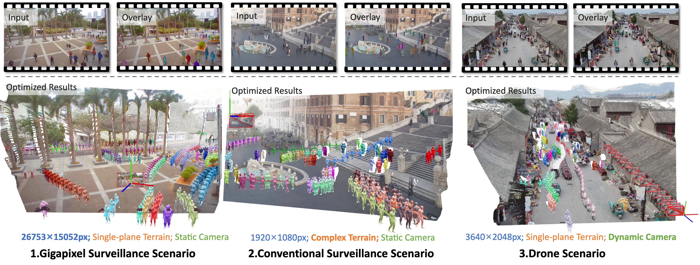
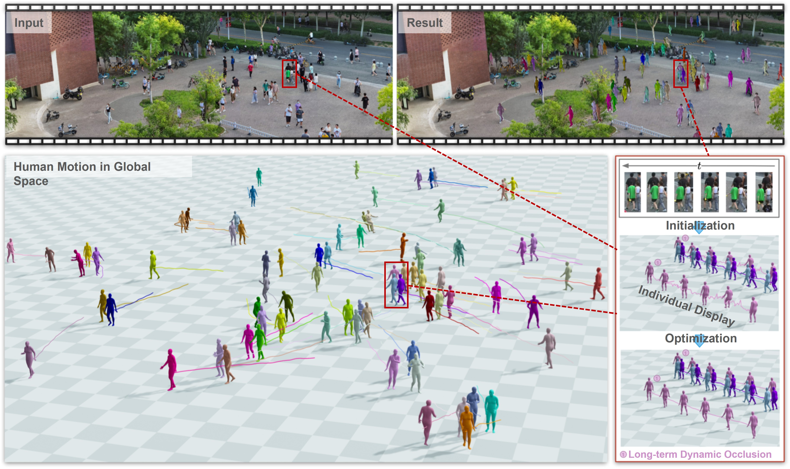
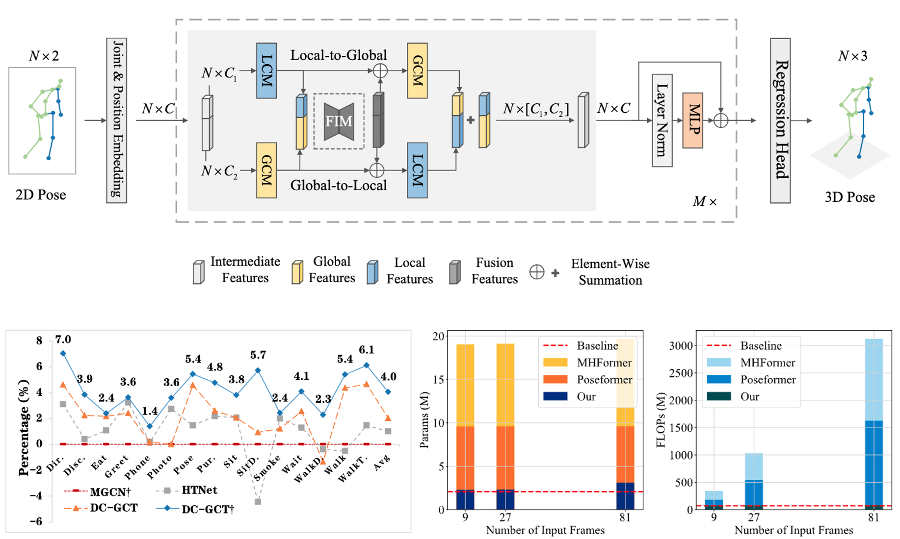
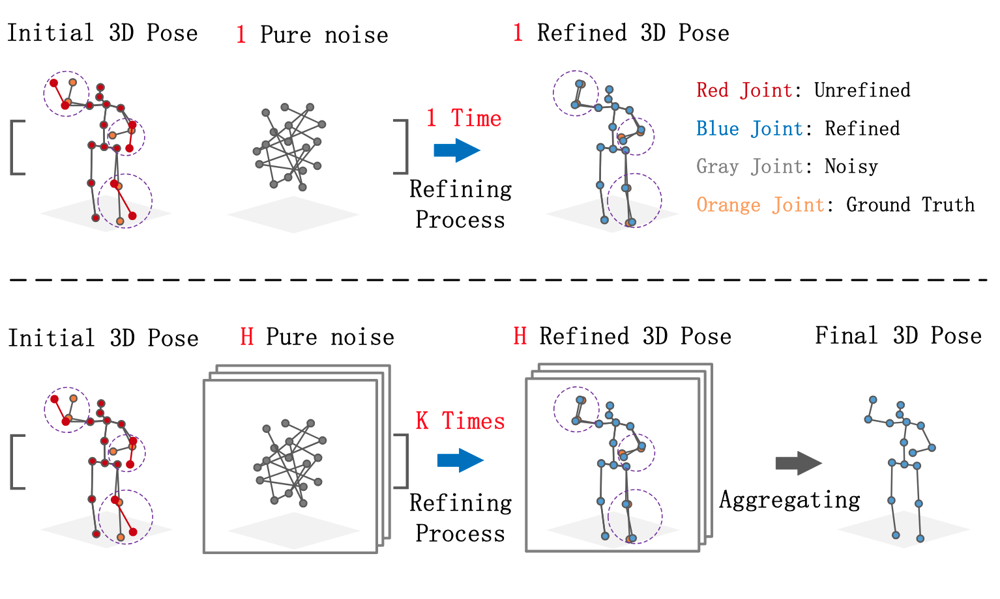
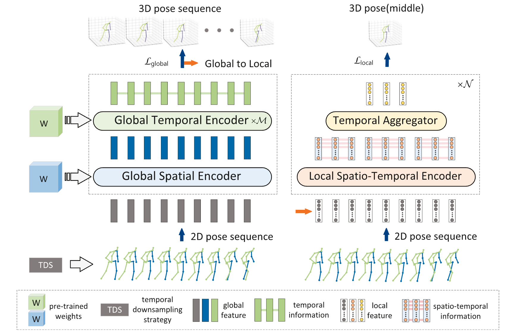

Crowd4D: Scene-Aware Monocular 4D Crowd Reconstruction
Reconstructs scene-consistent 4D crowds from monocular video by jointly optimizing human motion and large-scale scene geometry.
I am Hongbo Kang (康洪菠), a Ph.D. candidate at Tianjin University advised by Prof. Kun Li. I also collaborate closely with Prof. Yu-Kun Lai at Cardiff University. I received my M.S. from Chongqing University of Technology, co-supervised by Prof. Yong Wang and Prof. Wenming Yang (Tsinghua University), and my B.Eng. from Jishou University.
My research focuses on human-centered 3D reconstruction and generation, with an emphasis on perceiving, modeling, and simulating humans in complex scenes. I work on individual and crowd reconstruction, virtual mixed-age crowd data construction, and individual and crowd motion simulation.

Reconstructs scene-consistent 4D crowds from monocular video by jointly optimizing human motion and large-scale scene geometry.

Introduces the first framework to recover temporally consistent 3D poses, positions, and body shapes for hundreds of people from large-scene monocular video.

Simulates real-time, personalized 3D crowd evacuation with human-inspired sensing, decision, and motion control.



Combines global and local spatial-temporal encoding to capture full-body and joint-level dependencies in 3D pose estimation.
International Conference on Machine Learning, 2026 · Paper · Project Page · Code
Computer Vision and Image Understanding, 2026 · Paper
IEEE Transactions on Circuits and Systems for Video Technology, 2026 · Code
Pattern Recognition, 2026 · Code
IEEE Transactions on Pattern Analysis and Machine Intelligence, 2025 · Paper · Project Page · Code
International Conference on Computer Vision, 2025 · Paper · Project Page · Code
International Conference on Acoustics, Speech, and Signal Processing, 2024 · Paper · Code
Digital Communications and Networks, 2024 · Paper
IEEE Transactions on Multimedia, 2023 · Paper